Show a sequence of six images of scene `CBspheres.dae` rendered with `max_ray_depth` set to 0, 1, 2, 3, 4, 5, and 100. The other settings should be at least 64 samples per pixel and 4 samples per light. Make sure to include all screenshots.
|
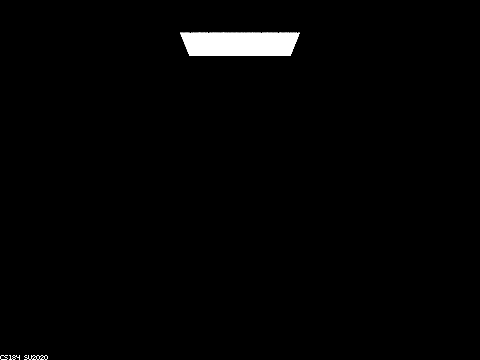
|
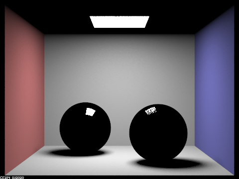
|
|
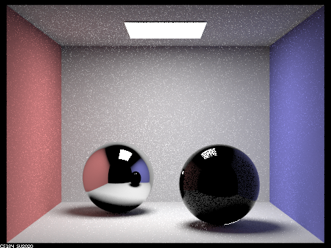
|
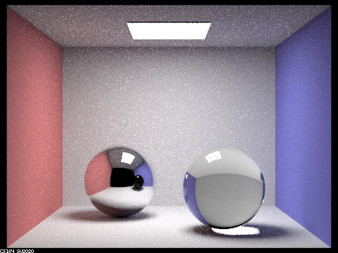
|
|
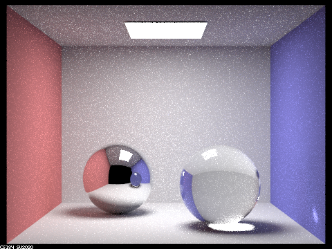
|
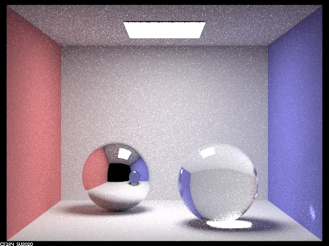
|
|
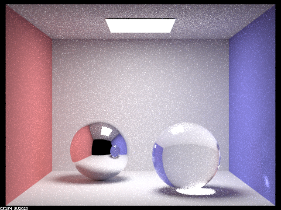
|
Point out the new multibounce effects that appear in each image.
Max ray depth = 0: (1) light from the area light source.
Max ray depth = 1: (1) Different color walls and floor. (2) Sphere with light source reflection.
Max ray depth = 2: (1) Reflection of the environment in the left sphere. (2) Noisy reflection of the environment in the right sphere. (3) Ceiling.
Max ray depth = 3: (1) Reflection of the ceiling in the left sphere. (2) Refraction of light from behind the right sphere into the camera.
Max ray depth = 4: (1) Light under the right sphere. (2) Reflection of the right sphere in the left sphere. (3) Light on the blue wall.
Max ray depth = 5: Almost the same as Max ray depth = 4.
Explain how these bounce numbers relate to the particular effects that appear. Make sure to include all screenshots.
When the max ray depth is set to 0, there is only the light from the light source and no bounce.
Therefore, we can only see the light that emits directly from the source to the camera.
When the max ray depth is set to 1, we can see the walls and floor because the light from the light source can bounce one time and reflect the camera.
Also, we can see the area light in the left sphere because the light emitted from the area light can bounce on the surface of the sphere to the camera.
On the right sphere, the reflected area light is noisier.
This is because the right sphere is a glass material and has partial reflection and partial refraction based on Fresnel reflection approximation.
When I set the max ray depth to 2, we can see the reflection of the red and blue wall as well as the floor in the left sphere.
In the right sphere, we can see a fainter reflection too.
These reflections result from two bounces because the light emitted from the area source bounces off the walls to the spheres and bounces off the spheres into the camera.
Also, due to two bounces reflection, we can see the ceiling.
The light from the area light source bounces off the floor to the ceiling and bounces into the camera.
When I raised the max ray depth to 3, we can see the reflection of the ceiling in the left sphere.
This occurs from the light from the source first bounces in the scene into the ceiling, then bounces again into the left sphere, then bounces the third time to the camera.
Also, we can see the refraction of light in the right sphere.
The light leaves the source bounces on the floors or wall towards the right sphere, then refract into the interior of the right sphere, and refracts again to leave the right sphere and enter the camera.
Furthermore, we can see lights on the floor under the right sphere.
These lights from the light source first refract into the interior of the right sphere and refract again to leave the right sphere, then bounces off the floor into the camera.
When I raised the max ray depth to 4, We can see some lights in the bottom of the right sphere.
These lights are the partial reflection of the lights on the floor under the right sphere.
Also, we can see the reflection of the right sphere in the left sphere occurs only after four bounces because the light emitted from the source bounces off the blue wall, refracts into the glass sphere, refracts out of the glass sphere, and reflects off the mirror sphere into the camera.
The light on the blue wall comes from the light on the floor under the right sphere and bounces on the blue wall into the camera.
Show a screenshot sequence of 4 images of scene `CBdragon_microfacet_au.dae` rendered with $\alpha$ set to 0.005, 0.05, 0.25 and 0.5. The other settings should be at least 128 samples per pixel and 1 samples per light. The number of bounces should be at least 5. Describe the differences between different images. Note that, to change the $\alpha$, just open the .dae file and search for `microfacet`.
Figure 8 to Figure 11 show the rendered dragon with different alpha values. As alpha goes higher and higher, the macro surface tends to be more diffuse because the surface reflects the light into all hemispheres. On the other hand, as alpha becomes lower, the surface becomes glossy and because the surface reflects the light in specular fashion. I select 128 samples/pixel, 2 samples/light, and a maximum ray depth of 5 when rendering the below images.
|
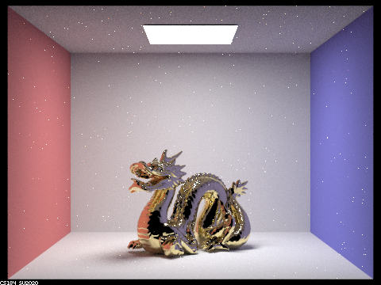
|
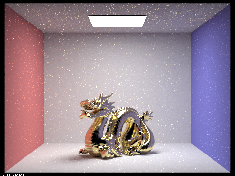
|
|
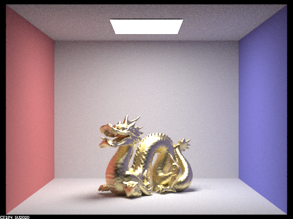
|
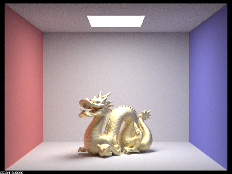
|
Show two images of scene `CBbunny_microfacet_cu.dae` rendered using cosine hemisphere sampling (default) and your importance sampling. The sampling rate should be fixed at 64 samples per pixel and 1 samples per light. The number of bounces should be at least 5. Briefly discuss their difference.
As we can see in Figure 12 and Figure 13, there is much more noise in cosine hemisphere sampling than in importance sampling. This is because the ray sampled by cosine hemisphere sampling is uniformly distributed around the hemisphere and doesn't take into account the distribution of the most influential rays. While importance sampling reflects the ray based on the Fresnel term, shadowing-masking term, and the distribution of normals. As a result, cosine hemisphere sampling is more inefficient. If we sample enough rays, both sampling will have the same result. I select 128 samples/pixel, 2 samples/light, and a maximum ray depth of 5 when rendering the below images.
|
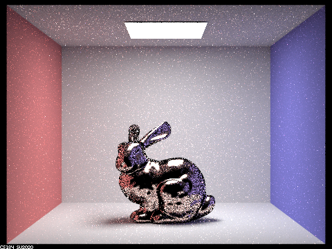
|
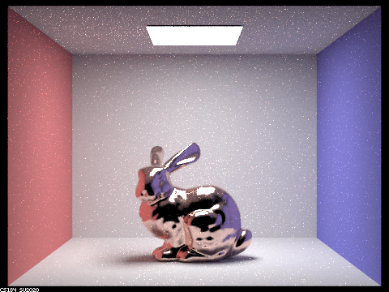
|
Show at least one image with some other conductor material, replacing `eta` and `k`. Note that you should look up values for real data rather than modifying them arbitrarily. Tell us what kind of material your parameters correspond to.
I select calcium as the material. The parameter eta is (0.29294, 0.28568, 0.28733) and k is (2.7181 2.3479 1.8333).
|
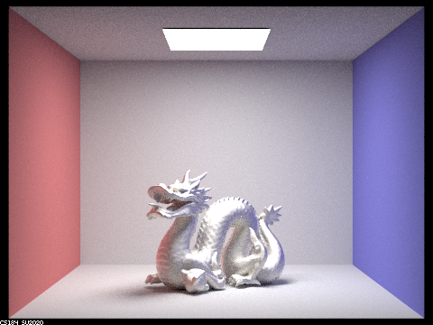
|
In a few sentences, explain the ideas behind environment lighting (i.e. why we do it/how it works).
Your response goes here.
Show the *probability_debug.png* file for the *.exr* file you are using, generated using the `save_probability_debug()` helper function after initializing your probability distributions.
Your response goes here.
Use the `bunny_unlit.dae` scene and your environment map *.exr* file and render two pictures, one with uniform sampling and one with importance sampling. Use 4 samples per pixel and 64 samples per light in each. Compare noise levels. Make sure to include all screenshots.
Your response goes here.
Use a different image (if you did part 2, we recommend `bunny_microfacet_cu_unlit.dae`) and your environment map *.exr* file and render two pictures, one with uniform sampling and one with importance sampling. Use 4 samples per pixel and 64 samples per light in each. Compare noise levels. Make sure to include all screenshots.
Your response goes here.
In a few sentences, explain the differences between a pinhole camera model and a thin-lens camera model.
Your response goes here.
Show a "focus stack" where you focus at 4 visibly different depths through a scene. Make sure to include all screenshots.
Your response goes here.
Show a sequence of 4 pictures with visibly different aperture sizes, all focused at the same point in a scene. Make sure to include all screenshots.
Your response goes here.